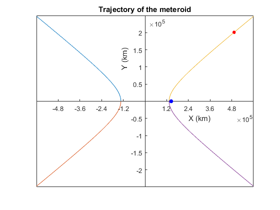

clc; clear all;
r=402000;
R=6378;
mu=6.6742e-20*5.974e24;
v=2.23;
theta=150*pi/180;
a=mu*0.5/(0.5*v^2-mu/r);
c=1-v^2*r/mu;
e= max(roots([1 (1+c)*cos(theta) c]));
r_p=a*(e-1);
v_p=sqrt(mu*(1/2/a+1/r_p));
v_inf=sqrt(mu/a);
b=a*sqrt(e^2-1);
x1=linspace(-600000,-a,1000);
y1= b*sqrt(x1.^2/a^2-1);
y1a= -b*sqrt(x1.^2/a^2-1);
plot(x1,y1);
hold on
plot(x1,y1a);
x2=linspace( a, 600000,1000);
y2=b*sqrt(x2.^2/a^2-1);
y2a=-b*sqrt(x2.^2/a^2-1);
plot(x2,y2)
plot(x2,y2a)
newLim = get(gca,'XLim');
newx = linspace(newLim(1), newLim(2),11);
set(gca,'XTick', newx);
ax = gca;
ax.XAxisLocation = 'origin';
ax.YAxisLocation = 'origin';
plot(a*e, 0,'.b', 'MarkerSize',20)
plot(a*e-402000*cos(theta), 402000*sin(theta), '.r', 'MarkerSize',15)
xlabel('X (km)')
ylabel('Y (km)')
title('Trajectory of the meteroid')
fprintf('\n\n--------------------------------------------------------\n')
fprintf('\n Eccentricty \n')
fprintf(' %s\n',e )
fprintf('\n Altitude at closest approach\n')
fprintf(' %s km/s\n', r_p )
fprintf('\n Speed at closest approach\n')
fprintf(' %s km/s\n', v_p )
fprintf('\n Hyperbolic excess velocity\n')
fprintf(' %s km/s\n', v_inf )
fprintf('\n--------------------------------------------------------\n')
--------------------------------------------------------
Eccentricty
1.085983e+00
Altitude at closest approach
1.146873e+04 km/s
Speed at closest approach
6.021641e+00 km/s
Hyperbolic excess velocity
1.728940e+00 km/s
--------------------------------------------------------
